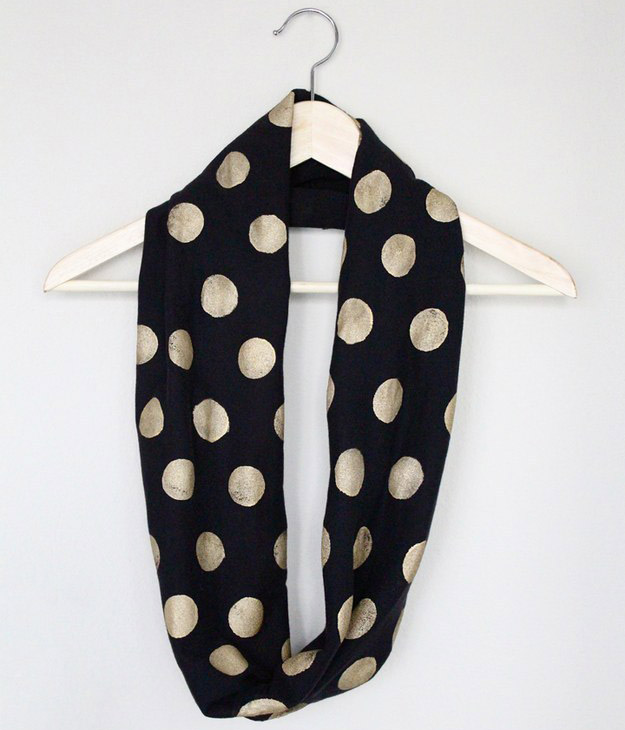

DIY Clothing
No-Sew Infinity Scarf

-
Materials Needed:
- Any T-shirt
- All surface gold paint
- Scisscors
- Tape
- Foam pouncer
Steps:
- Lay your t-shirt flat, taping down the edges. Cut a line straight across just above the bottom hem and just below the sleeves or the armpit. Make the cut edges as smooth as possible.
- Dip your pouncer in the paint color of your choice and start dotting.
- Stamp your first row spaced however you’d like, then make the next row alternated from the first. Repeat this until one whole side of the scarf is patterned.
No-Sew Slip Dress
Follow instruction on how to create one here